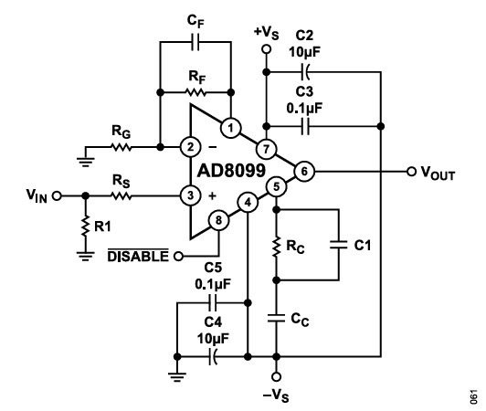

电路结构与问题现象
1.1 基本电路结构
本案例涉及一个基于 AD8099 高速运放的两级级联放大电路。AD8099 是 ADI 公司推出的超低噪声、高速电压反馈运算放大器，其增益带宽积高达 3.8 GHz，压摆率达 1350 V/µs，典型应用于高速 ADC 驱动、射频/中频放大和仪器仪表前端。
电路的级联架构为：输入信号 → 第一级 AD8099（G₁ = +10 V/V）→ 高通滤波（HPF）→ 第二级 AD8099（G₂ = +10 V/V）→ 低通滤波（LPF）→ 缓冲级（×1）→ 输出。总增益 100 倍（40 dB），目标工作频率覆盖 1 MHz ~ 20 MHz 带宽。
1.2 核心运放参数（AD8099）
| 参数 | 规格 | 工程含义 |
|---|---|---|
| 增益带宽积（GBWP） | 3.8 GHz（典型值） | 在 G=+10 时 −3 dB 带宽约 380 MHz |
| −3 dB 带宽 (G=+10) | ≈ 550 MHz | 实际可用带宽远小于 GBWP，受限于内部补偿 |
| 压摆率 (G=+10) | 1350 V/µs | 支持大信号高速脉冲，适合 ADC 驱动 |
| 建立时间 (0.1%) | 18 ns | 采样系统中 step response 的关键指标 |
| 输入电压噪声 | 0.95 nV/√Hz | 极低噪声，适合微弱信号前级 |
| 静态电流 | 约 15 mA | 带禁用功能（PD 引脚），可动态管理功耗 |
1.3 AD8099 外部补偿特性
补偿网络触发条件
AD8099 根据闭环增益决定是否需要外部补偿：
- 增益 +2 至 +10：必须使用外部 RC 网络进行补偿。内部未做完全补偿，环路不稳定。
- 增益大于 +15：无需外部补偿。此时反馈深度已足够浅，开环相移在 0 dB 穿越点处仍留有充分裕度。

七大补偿元件详解
根据 AD8099 数据手册 Figure 59 的电路结构，完整的补偿网络包含以下关键元件：
| 元件 | 功能 | 典型范围 | 设计权衡 |
|---|---|---|---|
| $R_F$ 和 $R_G$ | 反馈电阻和增益设置电阻，决定噪声增益 | $R_F = 250\Omega \sim 499\Omega$ | 增益 = 1 + $R_F/R_G$；$R_F$ 同时影响补偿极点位置和带宽 |
| $R_S$（输入串联电阻） | 低增益配置时输入阻抗匹配，抑制输入端振铃 | $0\Omega \sim 50\Omega$ | $R_S$ 越大带宽越低，是带宽 vs 稳定性的直接杠杆 |
| $C_F$（反馈电容） | 在环路响应中引入零点，补偿 $R_F$ 与输入寄生电容形成的极点 | $0.5\text{pF} \sim 1.5\text{pF}$ | NPO 材质（温漂小），焊接时避免引入额外寄生 |
| $R_C$（补偿串联电阻） | 阻尼封装引线电感与 $C_C$ 形成的串联谐振 | $0\Omega \sim 50\Omega$ | $R_C$ 过大会限制补偿效果，使高频开环增益不能充分下降 |
| $C_C$（补偿电容，Pin5） | 降低高频开环增益，增大相位裕度 | $0\text{pF} \sim 5\text{pF}$ | 增益越低需要的 $C_C$ 越大（+2 需 4~5 pF，+5 需 1 pF） |
| $C_1$（并联在 $R_C$ 上的电容） | 降低 $R_C$ 的高频阻抗，减少中频增益尖峰 | $0\text{pF} \sim 2\text{pF}$ | 与 $R_C$ 形成零点，需与 $C_C$ 协同调整 |
| 增益 | 封装 | $R_F$ (Ω) | $R_G$ (Ω) | $R_S$ (Ω) | $C_F$ (pF) | $R_C$ (Ω) | $C_C$ (pF) | $C_1$ (pF) |
|---|---|---|---|---|---|---|---|---|
| −1 | SOIC | 250 | 250 | 50 | 1.5 | 50 | 4 | 1.5 |
| +2 | SOIC | 250 | 250 | 50 | 1.5 | 50 | 4 | 1.5 |
| +2 | LFCSP | 250 | 250 | 50 | 0.5 | 50 | 5 | 2 |
| −1 | LFCSP | 250 | 250 | 50 | 1.0 | 50 | 5 | 2 |
| +5 | LFCSP/SOIC | 499 | 124 | 20 | 0.5 | 50 | 1 | 0 |
| +10 | LFCSP/SOIC | 499 | 54 | 0 | 0 | 0 | 0.5 | 0 |
| +20 | LFCSP/SOIC | 499 | 26 | 0 | 0 | 0 | 0 | 0 |
1.4 级联后的振荡现象
两级独立测试时均正常工作（单级 10 倍放大，10 MHz 正弦波输出干净），但两级级联后输出端叠加了约 300 MHz 的自激振荡。具体表现为：
- 输入 1 MHz ~ 20 MHz 范围内，输出波形均叠加有不规则高频振荡包络。
- 接上示波器探头时振荡有时消失，断开后又重现。
- 振荡频率（~300 MHz）远高于信号频率，且幅度不稳定。
问题排查与根因分析
2.1 常规检查
- 电源电压：正常，±5V 供电，LDO 输出纹波 < 5 mV——电源不是振荡的直接原因。
- 电路仿真：理想仿真（TINA-SPICE / LTspice）显示电路稳定，无振荡迹象。但仿真模型未包含 PCB 寄生参数。
2.2 自激振荡条件分析
自激振荡的本质是 Barkhausen 判据 的满足——即环路增益 $|A\beta| \ge 1$ 且相位偏移达到 $180^\circ$（形成正反馈）：
在两级级联结构中，总开环增益为两级各自开环增益的乘积。即使单级在目标频段有足够的相位裕度（通常 > 45°），两级串联后总相移翻倍，很可能在某个频率点上同时满足 Barkhausen 条件。
2.3 寄生参数建模——从高级硬件工程师视角
在 300 MHz 频段，PCB 走线不能再视为简单导线。以下是对本案例中关键寄生参数的定量估算：
PCB 走线寄生电感
若反馈环路走线总长 20 mm，则 $R_F - R_G - 反相输入端$ 环路的寄生电感约为 $20 \times 0.8 \approx 16$ nH。在 300 MHz 时，该电感的感抗 $X_L = 2\pi \times 300\text{M} \times 16\text{n} \approx 30\ \Omega$——已经与 $R_F$（250 Ω）可比！
过孔寄生电容与电感
| 寄生元件 | 典型值 | 300 MHz 下的阻抗 | 影响 |
|---|---|---|---|
| 单个过孔寄生电感 | ~1.5 nH（板厚 1.6 mm） | $X_L \approx 2.8\ \Omega$ | 反馈环路中两个过孔 ≈ 3 nH，引入额外相移 |
| 过孔对地寄生电容 | ~0.5 pF | $X_C \approx 1.1\text{k}\Omega$ | 在反相输入端形成额外极点 |
| 相邻走线间耦合电容 | ~0.1 pF/mm | $X_C \approx 5.3\text{k}\Omega$/mm | 输出-输入耦合形成正反馈路径 |
2.4 相位裕度计算——定量分析
相位裕度（Phase Margin, PM）定义为：在环路增益 $|A\beta| = 1$（0 dB）的频率点上，环路相移与 180° 之间的差值。
相位裕度与闭环响应的关系
| 相位裕度 | 闭环响应特征 | 时域表现 | 工程评估 |
|---|---|---|---|
| < 0° | 不稳定，振荡 | 持续自激 | 不可接受 |
| 0° ~ 30° | 条件稳定，严重振铃 | 过冲 > 50%，长时间衰减 | 高风险 |
| 30° ~ 45° | 勉强稳定，可见过冲 | 过冲 20%~40% | 可用但余量不足 |
| 45° ~ 60° | 稳定，轻微过冲 | 过冲 < 20%，快速建立 | 推荐目标 |
| > 60° | 过阻尼，无过冲 | 无过冲，建立时间变长 | 保守设计 |
补偿方法与相位裕度优化
3.1 补偿电容的极点引入机制
反馈电阻 $R_F$ 两端并联补偿电容 $C_F$（或通过 Pin5 接入的 $C_C$），在反馈网络中引入一个新的极点：
从波特图角度理解：补偿电容在高频段使反馈系数 $\beta$ 增大（反馈加深），从而拉低环路增益 $|A\beta|$ 的 0 dB 穿越点，使其发生在开环相移尚未急剧恶化的较低频率，以此换取相位裕度。
3.2 AD8099 补偿网络设计细节
| 特性 | 详情 |
|---|---|
| 补偿引脚 | Pin5，连接 $C_C$ 补偿电容 |
| 推荐范围 | 0 ~ 5 pF（与增益相关，增益越低需要的 $C_C$ 越大） |
| 典型示例 | 反馈补偿电容 1.5 pF（手册 Figure 60） |
| 材质要求 | NPO（C0G）材质，温漂 ±30 ppm/°C（−55°C 至 +125°C），无压电效应 |
| 本案例最终值 | $C_C$ 从 5 pF 增大至 6 pF 后振荡消失 |
补偿电容材质选择的深层理由
- NPO/C0G：温漂 ±30 ppm/°C，无 DC 偏压降额，无压电效应。1 pF 级别电容的精度可达 ±0.1 pF，满足 pF 级补偿的严格要求。
- X7R 为何不行：DC 偏压下降额可达 20%~60%，且具有显著的压电效应——机械振动会产生电荷噪声。在 pF 级别补偿中，0.1 pF 的偏差就可能导致相位裕度变化 5°~10°。
- 焊接注意事项：pF 级电容对焊盘尺寸极其敏感。焊盘每增加 1 mm²，对地寄生电容增加约 0.05~0.1 pF。建议使用 0402 或更小封装，并最小化焊盘尺寸。
3.3 三种经典补偿技术对比
高速运放稳定性补偿有三种基本策略，各有适用场景：
| 补偿技术 | 电路实现 | 原理 | 优点 | 缺点 | 适用场景 |
|---|---|---|---|---|---|
| 环路内补偿 （本案例采用） | $R_F$ 两端并联 $C_F$ 或通过补偿引脚接入 $C_C$ | 在反馈网络中引入极点，高频段增大反馈深度，降低环路增益 | 简单、有效，不增加额外有源器件 | 降低带宽；$C_F$ 取值需与 $R_F$ 配合 | 电压反馈型运放（VFB）的主要补偿手段 |
| 超前补偿 （Lead Compensation） | 在反馈网络中插入 RC 串联网络（$R_{lead} + C_{lead}$ 与 $R_F$ 并联） | 引入零点使相位提前，在穿越频率附近"拉回"相位曲线 | 可以在不显著降低带宽的前提下改善相位裕度 | 需要精确计算零极点位置，对寄生参数敏感 | 需要兼顾带宽和稳定性的场景 |
| 滞后补偿 （Lag Compensation） | 在时间常数最大的回路节点并联 $C$ 到地 | 令主极点频率下降，使开环增益在更低频率开始衰减 | 实现简单，对参数不敏感 | 大幅牺牲带宽，建立时间显著增加 | 对带宽要求不高的低频精密电路 |
工程经验与设计规范
4.1 逐级增益分配策略
总增益 100 倍是需求，但如何分配每一级的增益是设计决策：
| 序号 | 建议 | 说明 | 反面案例 |
|---|---|---|---|
| 1 | 逐级平均分配增益 | 100 倍分解为两级 10 倍，每级增益越低则相位裕度相对越大 | 第一级 50 倍 + 第二级 2 倍：第一级增益过高，极易振荡 |
| 2 | 增益裕度逐级递减 | 第一级增益略低于第二级，确保最前端稳定性 | 前级用高增益"省去后级"：一旦前端振荡，后级无法挽回 |
| 3 | 级间预留衰减网络 | 两级之间预留 π 型电阻衰减网络（即使当前不需要），便于后期调试 | 直接耦合：级间无调试手段 |
| 4 | 仪表放大器优先 | 若需要差分输入，优先用全差分放大器（FDA）代替两个独立运放 | 用两个单端运放拼差分：CMRR 差且稳定性难保证 |
4.2 高频 PCB 布局规范
对于 AD8099 这类 3.8 GHz GBWP 的运放，布局要求远超常规低频电路：
| 布局要点 | 具体要求 | 违规后果 |
|---|---|---|
| 反馈环路最短 | $R_F$、$R_G$ 紧贴反相输入引脚，环路走线 < 5 mm | 每增加 5 mm 走线 ≈ 额外 4 nH 寄生电感，在 300 MHz 产生 ~8 Ω 额外阻抗 |
| 50 Ω 特性阻抗 | 输入/输出走线保持 50 Ω 微带线结构，参考层连续 | 阻抗不连续导致信号反射，在高速脉冲下产生过冲和振铃 |
| 包地隔离 | 输入走线两侧用接地铜皮包覆（Guard Trace），间距 ≥ 3× 线宽 | 输入-输出之间通过 PCB 耦合电容（~0.1 pF/mm）形成正反馈路径 |
| 去耦电容布局 | 每个电源引脚 1 mm 内放置 100 nF NPO + 10 µF X5R（远一点） | 电源引脚到电容的走线电感 → PDN 阻抗尖峰 → 供电噪声 |
| 斩断级间耦合 | 两级之间用地铜皮完全隔离，间距 ≥ 5 mm | 级间串扰引入额外正反馈，两级叠加后极易振荡 |
| 输出隔离电阻 | 输出端预留 10~50 Ω 串联电阻，隔离容性负载（包括探头电容） | 容性负载直接接到输出 → 在反馈环路外新增极点 → 振荡 |
4.3 调试方法体系
4.4 匹配网络设计（π 型 / T 型）
当高频走线长度不可压缩时（如板间互连、长距离传输），须在走线中间插入阻抗匹配网络：
| 网络类型 | 拓扑 | 适用场景 | 设计要点 |
|---|---|---|---|
| π 型网络 | 并联 C → 串联 L → 并联 C | 源/负载阻抗 > 50 Ω，需降压匹配 | 两侧电容值可不对称以实现阻抗变换，Q 值控制在 2~5 |
| T 型网络 | 串联 L → 并联 C → 串联 L | 源/负载阻抗 < 50 Ω，需升压匹配 | 适用于低阻抗天线馈电和功放输出级 |
| L 型网络 | 串联 L + 并联 C（或反之） | 窄带点频匹配（最简） | 带宽最窄，仅 Q 值最低的配置有实用带宽 |
手册推荐值 vs 实际调试
手册补偿电容推荐值基于厂家评估板的实测结果。评估板采用优化的多层板结构（通常 4~6 层），完整的地平面，以及最小化的反馈环路。实际 PCB 的差异（双层 vs 多层、走线长度、过孔数量、焊盘尺寸）导致最终值需要实验微调。手册给出的 0~5 pF 不是"5 pF 一定够"，而是"请在这个范围内通过调试找到属于你板子的值"。
第四章要点总结
- 设计阶段：逐级平均分配增益，预留补偿网络位置和级间隔离空间。
- Layout 阶段：反馈环路最短（<5 mm）、级间充分隔离、输出预留串联电阻。
- 调试阶段：单级先行、补偿步进微调、隔离法定位、探头效应验证。
- 心态：手册值是起点，实测值是终点。高速模拟电路的调试没有"一劳永逸"的固定值。
高速与低速模拟设计的根本差异
本案例的核心启示是：当电路工作频率进入百 MHz 以上区域，设计范式发生根本性转变。以下从三个维度系统对比。
5.1 模型精度——从集总到分布
| 维度 | 低速模拟电路（< 10 MHz） | 高速模拟电路（> 100 MHz） |
|---|---|---|
| 电阻模型 | ≈ 纯阻性，R 值即全部 | 有寄生串联电感（~1 nH/mm 引线）和并联电容（~0.5 pF），$Z = R + j\omega L$ |
| 电容模型 | ≈ 理想电容，C 值即全部 | 串联 RLC 模型：ESR + ESL + C 三者串联。超过 SRF 后呈感性 |
| 电感模型 | ≈ 理想电感 | 有并联寄生电容和串联电阻，SRF 以上呈容性 |
| 走线模型 | 导线（零阻抗、零延迟） | 传输线——特征阻抗 $Z_0$，传播延迟 $t_{pd}$ ≈ 5.6 ps/mm（FR4） |
| 地平面 | 等电位参考面 | 分布式 RLC 网络——不同位置之间在高频下存在显著电位差（地弹） |
5.2 运放选型与布局要求
| 特性 | 低速模拟电路 | 高速模拟电路 |
|---|---|---|
| 运放选择标准 | 增益带宽积充裕即可 | 需综合评估 $f_T$（~3.8 GHz AD8099）、噪声密度、失真（HD2/HD3）、压摆率、建立时间 |
| 布局要求 | 一般性注意 | 严格控制走线长度、参考平面完整性、50 Ω 匹配；反馈环路 < 5 mm；包地隔离 |
| 去耦 | 100 nF 每电源引脚即可 | 多级去耦：100 nF NPO（1 mm 内）+ 10 µF X5R + 铁氧体磁珠，形成 π 型滤波 |
| 匹配网络 | 通常不需要 | 可能需要 π 型 / T 型网络维持 50 Ω 阻抗；长走线必做终端匹配 |
| 封装选择 | SOT-23 / SOIC 通常够用 | 优先 QFN / LFCSP（无引线封装），寄生电感远低于 SOIC；Bond Wire 越短越好 |
5.3 稳定性判据
| 判据 | 低速电路 | 高速电路 |
|---|---|---|
| 相位裕度（PM） | ≥ 45° 即可 | ≥ 45° 是底线，建议 ≥ 55°（考虑 PCB 寄生、温度漂移、批次差异） |
| 增益裕度（GM） | ≥ 10 dB | ≥ 12 dB，且需在相位 180° 频率处验证 |
| 补偿策略 | 简单 RC 或芯片内部补偿 | 需精确的外部补偿网络（$C_C$ + $R_C$ + $C_F$），多级电路需独立补偿后联合验证 |
| 容性负载耐受 | 几十 pF 通常无影响 | 10 pF 即可明显改变稳定性——必须预留输出隔离电阻 |
| 电源抑制比（PSRR） | 低频段高（>80 dB） | PSRR 随频率升高急剧下降（>10 MHz 时可能 < 40 dB），电源噪声直接影响输出 |
全文核心启示
- 高速运放的设计是"全栈工程"：从 SPICE 仿真、原理图设计、PCB 布局到调试测量，每个环节的误差都会积累并最终表现为振荡或不稳定。
- PCB 寄生参数不是"次要因素"：在 300 MHz 以上，每毫米走线、每个过孔都在反馈环路中产生可观的阻抗和相移。布局的差异是手册推荐值和实际需求之间差距的最主要来源。
- 手册值是起点，不是终点：AD8099 的 0~5 pF 补偿电容推荐范围是正确的，但最终值（本案例 6 pF）必须结合实际 PCB 调试确定。
- 级联系统的稳定性：两个独立的稳定运放级联后可能不稳定——因为总相移叠加、级间耦合和 PCB 寄生共同作用。必须将级联系统作为整体评估稳定性。
- 探头不"透明"：12 pF 的探头电容足以改变临界稳定电路的行为。调试时若发现"接探头就正常"——说明电路裕度不足，需要增加补偿，而非庆幸"不接探头看不到振荡"。